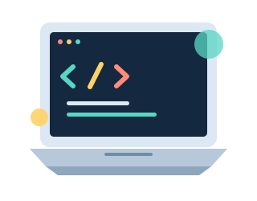

WELCOME
A little about me
I'm a college student studying information technology and developing my skills one project at a time. I enjoy learning how websites and programs work and finding practical ways to use technology.
This portfolio is a place to share what I'm learning, what I want to accomplish, and the projects I complete along the way.

My aspirations
My goal is to keep improving my technical skills and prepare for a career in IT. I want to gain experience solving problems, working with different technologies, and building projects that are useful to other people.
What I'm working on
Right now, I'm practicing the basics of web development, including writing HTML, using an external CSS stylesheet, and making pages work on different screen sizes. I'm also continuing to build my general programming and problem-solving skills through coursework.